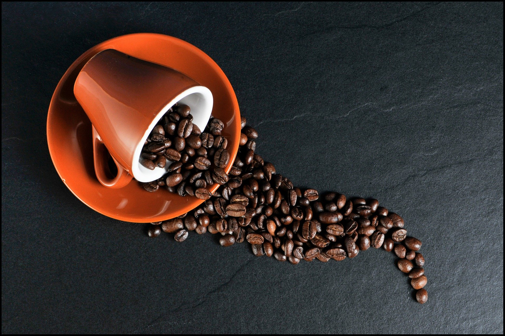
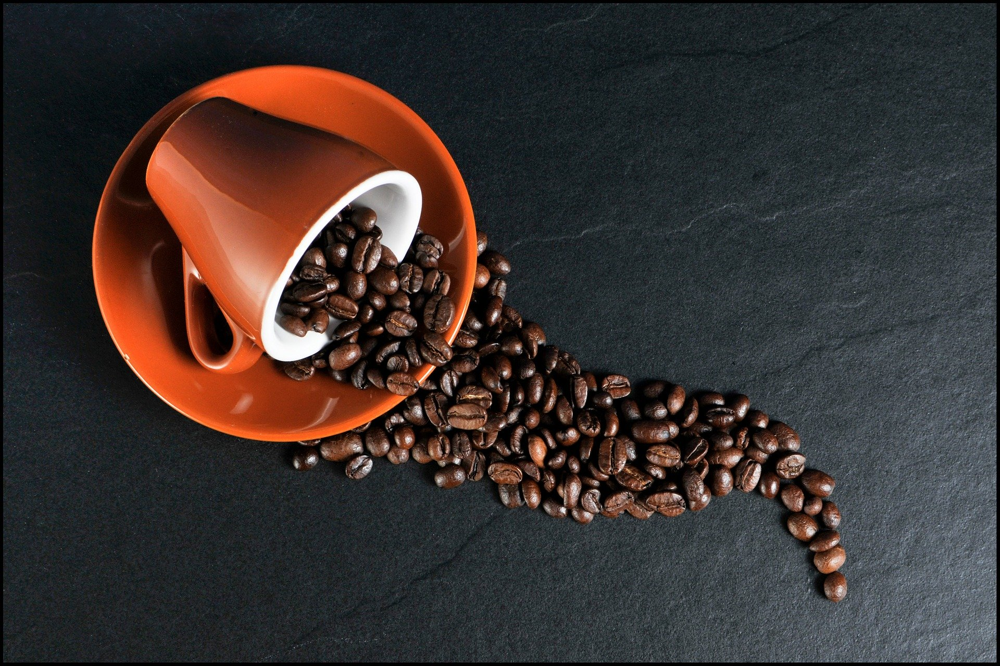

喝完再運動，增加專注力、減輕疲勞感！喝咖啡好處多，但也有5個缺點
相信不少人的一天都是從「咖啡」開始！喝咖啡的優缺點是什麼？營養師指出，喝咖啡能提升運動表現、提神減肥，不過若過量攝取，恐會咖啡成癮、心悸、甚至帶來骨鬆風險。
提升運動表現助燃脂！運動前喝咖啡4好處
- 提升新陳代謝：
研究指出，相較於單獨運動，運動前喝黑咖啡可以促進脂肪細胞釋放脂肪酸進入血液中，作為能量來源，更有效的燃燒脂肪。
- 增加運動專注力：
咖啡因藉由與大腦中「腺苷酸」的受體結合，讓人變得亢奮並提高專注力。
- 提高無氧運動耐力和高強度運動表現
藉由「節省」肝糖消耗，加速脂肪利用，讓脂肪作為運動主要能量來源。
- 減少運動中的疲勞感
咖啡因可以促進中樞神經釋放多巴胺，降低疼痛感來改善運動引發的疲勞。吳欣陵說，若想在運動前喝咖啡增加運動效果，建議在運動前40～60分鐘內攝取咖啡因，且需要達到每公斤3～6毫克的劑量。例如50公斤的訓練者，需喝到150～300毫克的咖啡因量。不喝咖啡者，也可以考慮從茶類、能量飲或熱可可來補充。
 

咖啡因過量有壞處！3族群喝咖啡要注意
不過，每種食物都有好有壞，「適量」對身體健康比較好。彭逸珊提醒，喜歡喝咖啡的人要特別注意，每日咖啡因攝取不要超過300毫克，包含咖啡、茶、提神飲料、巧克力等，過量攝取咖啡因帶來的缺點是會心悸、骨鬆風險、入睡困難、刺激腸胃黏膜、咖啡成癮。
吳欣陵也補充，短期內攝取過量咖啡因，可能會導致身體不適，包含心悸、心跳加速、頭痛、顫抖、噁心及腹瀉等。另外有3個族群喝咖啡要注意：
1.定期服用某些藥物者，可能會與咖啡因交互影響，有服藥習慣者先諮詢過醫師或藥師。
2.懷孕者可以攝取咖啡因，但不超過200毫克，避免影響到胎兒安全。
3.長期鈣質缺乏者，若每天飲用超過300毫克以上咖啡因，會增加骨質疏鬆的風險。